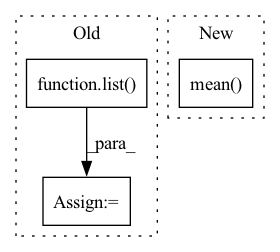

Pattern ID :30071

Before Change
model.cuda()
path1 = pathlib.Path(path1)
files1 = list(path1.glob("*.%s" %suffix))
// files1 = sorted(list(path1.glob("*.%s" %suffix)), key=lambda x : int(os.path.splitext(os.path.basename(x))[0]))
path2 = pathlib.Path(path2)
files2 = list(path2.glob("*.%s" %suffix))
After Change
fid = calculate_frechet_distance(m1, s1, m2, s2)
fid_values.append(fid)
return np.mean(fid_values)
In pattern: SUPERPATTERN
Frequency: 4
Non-data size: 3
Instances
Fragment ID: 89230449
Project Name: ariel415el/gpdm
Commit Name: bde695933e46e0d59d4129babafbf2732ae81b76
Time: 2022-03-06
Author: ariel415el@gmail.com
File Name: tests/SIFID/sifid_score.py
M Class Name: AnonimousClass
N Class Name: AnonimousClass
M Method Name: calculate_sifid_given_paths(5)
N Method Name: calculate_sifid_given_paths(6)
M Parent Class:
N Parent Class:
M File Name: tests/SIFID/sifid_score.py
N File Name: tests/SIFID/sifid_score.py
M Start Line: 189
M End Line: 213
N Start Line: 199
N End Line: 208
'>
Before Change
query_idx = list(map(lambda x: find_pattern(x[0], x[1]), zip(search_queries, input_ids.tolist())))
if isinstance(layer, list):
representations = list(map(lambda x: x[torch.arange(num_inputs)[:, None], query_idx].mean(1), hidden_states))
else:
if layer != "all":
if layer is None:
layer = self.layers
After Change
elif layer > self.layers:
raise ValueError(f"Number of layers specified ({layer}) exceed layers in model ({self.layers})!")
// representations = hidden_states[torch.arange(num_inputs)[:, None], query_idx].mean(1)
representations = torch.stack([hs.squeeze()[idx[0]:idx[1]].mean(0) for hs, idx in zip(hidden_states.split([1] * num_inputs), query_idx)])
return representations
'>
Fragment ID: 89230448
Project Name: kanishkamisra/minicons
Commit Name: b9f76e2dfc167677a5e1a4877b8bc76799a01974
Time: 2021-08-21
Author: menogetusername@gmail.com
File Name: minicons/cwe.py
M Class Name: CWE
N Class Name: CWE
M Method Name: extract_representation(3)
N Method Name: extract_representation(3)
M Parent Class: object
N Parent Class: object
M File Name: minicons/cwe.py
N File Name: minicons/cwe.py
M Start Line: 109
M End Line: 132
N Start Line: 110
N End Line: 132
'>
Before Change
metric += sklearn_metrics.mean_squared_error(y_true_los, y_pred_los)
elif metrics_strategy == "MAPE":
metric += sklearn_metrics.mean_absolute_percentage_error(y_true_los, y_pred_los)
metric += np.mean(
np.abs(y_true_outcome - y_pred_outcome)
* max_visits
* np.array(list(map(lambda x: sigma_func(x), y_true_los)))
)
if verbose:
print("LOS Score:", metric)
After Change
result = np.array(metric)
if verbose:
print("Early Prediction Score:", result)
return result.mean(axis=0)
'>
Fragment ID: 89230450
Project Name: yhzhu99/covid-ehr-benchmarks
Commit Name: fc9fcafdeae37b009acb4acf87682f0d86306e69
Time: 2022-06-29
Author: yhzhu99@gmail.com
File Name: app/core/evaluation/covid_metrics.py
M Class Name: AnonimousClass
N Class Name: AnonimousClass
M Method Name: multitask_los_metric(6)
N Method Name: multitask_los_metric(7)
M Parent Class:
N Parent Class:
M File Name: app/core/evaluation/covid_metrics.py
N File Name: app/core/evaluation/covid_metrics.py
M Start Line: 83
M End Line: 116
N Start Line: 119
N End Line: 142
'>
Before Change
input (batch_size, n_sources, *)
n_dims = input.dim()
dims = list(range(n_dims))
input_permuted = input.permute(1, 0, *dims[2:])
left, right = self.left, self.right
After Change
loss = loss.permute(1, 0, 2).contiguous() / self.n_combinations
loss = loss.sum(dim=2)
loss = loss.mean(dim=1)
if batch_mean:
loss = loss.mean(dim=0)
'>
Fragment ID: 89230441
Project Name: tky823/dnn-based_source_separation
Commit Name: 9ae9e0e761dbe8b27ced4dbd676bf9fdada629f9
Time: 2021-08-12
Author: 40362510+tky823@users.noreply.github.com
File Name: egs/musdb18/meta-tasnet/src/adhoc_criterion.py
M Class Name: MultiDissimilarityLoss
N Class Name: MultiDissimilarityLoss
M Method Name: forward(3)
N Method Name: forward(3)
M Parent Class: nn.Module
N Parent Class: nn.Module
M File Name: egs/musdb18/meta-tasnet/src/adhoc_criterion.py
N File Name: egs/musdb18/meta-tasnet/src/adhoc_criterion.py
M Start Line: 28
M End Line: 39
N Start Line: 51
N End Line: 60